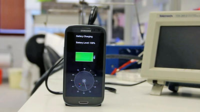
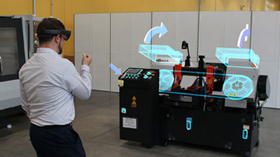
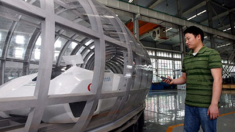
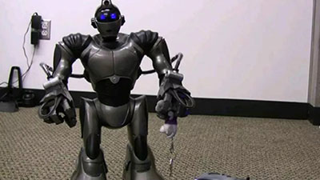
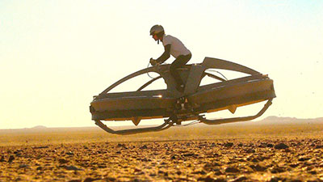
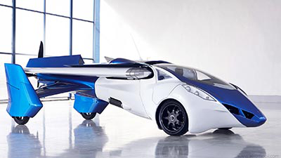

7 Teknologi Canggih yang akan hadir Di Masa Depan
1. StoreDot Fast Charging Battery

Tidak hanya anak muda, orang tua jaman sekarang sudah sangat sulit untuk lepas dengan yang namanya smartphone. Dengan smartphone, kita tidak hanya bisa menelpon dan mengirim pesan seperti handphone jaman dulu, tapi juga bisa membaca berita, mendengarkan musik, menonton video, dan bermain games. Tapi, tidak semua hal tersebut bisa dilakukan. Daya baterai yang terbatas menjadi masalahnya.
Sering digunakan, baterai smartphone akan sangat cepat habis. Sadar akan betapa pentingnya smartphone bagi kehidupan, perusahaan StoreDot membuat baterai generasi baru yang bisa dicas dengan sangat cepat. Dengan menggunakan teknologi nanom StoreDot menggunakan bio organik nanodot yang bisa meningkatkan kapasitansi elektroda dan meningkatkan performa elektrolit. StoreDot mengklaim bahwa baterai ciptaannya bisa terisi penuh hanya dalam waktu 30 detik saja.
2. Augmented Reality

Sudahkah kalian menonton film Iron Man? Iron Man merupakan salah satu superhero terkenal dari Marvel. Di film tersebut, kalian dapat melihat sang superhero, Tony Stark melihat dunia dan hal lainnya melalui gambar yang ditampilkan oleh komputer canggihnya. Teknologi tersebut, oleh kita sekarang disebut dengan Augmented Reality. Keren ya apabila teknologi tersebut bisa kita gunakan.
Sebenarnya, teknologi Augmented Reality sudah ada, tapi penggunaannya masih sangat terbatas. Augmented reality mengalami perkembangan yang sangat pesat seiring berjalannya waktu. Jika kalian bisa bersabar, mungkin nantinya kalian bisa melihat karakter kartun, alien atau zombie di jalan. Atau, kalian bisa saja mengganti orang di sekitar kalian menjadi model favorit jika mau
3. Super Maglev Train

Kereta menjadi solusi terbaik untuk traveling selain menggunakan pesawat terbang. Kita tahu bahwa kereta buatan Maglev Technology adalah kereta canggih yang bisa melaju dengan sangat cepat. Beberapa negara sudah menerapkan kereta cepat buatan Maglev seperti di Jepang dan Cina. Kecepatan kereta Maglev bisa mencapai lebih dari 418 km/jam.
Manusia memang tidak pernah puas. Kereta cepat Maglev yang masih dirasa kurang tersebut, oleh Maglev Technology masih ingin dibuat lebih cepat lagi. Kereta yang sedang dalam tahap pengembangan tersebut dinamakan Super Maglev. Menggunakan teknologi yang hampir sama dengan Maglev dan sedikit penambahan di beberapa sisi, diusahakan nantinya Super Maglev dapat berlari hingga 2.896 km/jam.
4. Robot Pembantu

Disibukkan dengan pekerjaan kantor dan hal-hal lainnya, membuat kita jadi sulit untuk beristirahat. Di saat hari biasa kita disibukkan dengan pekerjaan kantor, di akhir pekan kita masih harus disibukkan dengan merapihkan rumah. Bagi yang rumahnya kecil tentu tidak begitu masalah, tapi bagaimana bagi mereka yang memiliki rumah besar?.
Untuk itulah kita membutuhkan yang namanya pembantu. Bukan pembantu manusia, melainkan robot pembantu. Dengan robot pembantu, kita tidak perlu khawatir lagi akan capek membersihkah rumah. Robot pembantu ciptaan Honda bernama Asimo didesain khusus untuk membantu tugas manusia dalam hal berberes rumah.
5. Aerofex Aero-X

Film Star Wars menyajikan sejumlah teknologi canggih yang bisa membuat kita tercengang. Bagi kalian yang sudah pernah menonton film Star Wars sebelumnya, masih ingatkah kalian dengan sepeda kecepatan tinggi yang dapat melayang? Jika masih, sepeda canggih tersebut diperkirakan siap kita nikmati tidak lama lagi.
Adalah sebuah teknologi bernama Aerofex Aero-X yang siap membuat kalian merasakan bagaimana rasanya menaiki sepeda layaknya di film Star Wars. Setelah melalui 15 tahun masa penelitian, Aerofex Aero-X adalah sebuah hover yang memiliki tenaga setara dengan 240 tenaga kuda. Aerofex Aero-X bisa melayang setinggi 3 meter dan melaju hingga kecepatan 72 km/jam.
6. Mobil Terbang

Setelah teknologi mobil tanpa supir, kini hadir lagi mobil terbang. Siapa pula yang tidak menginginkan mobil terbang. Ketika di darat kita sudah kesal dengan yang namanya macet, kita tinggal mengubah mode dari darat menjadi terbang. Dan dalam sekejap, kita tidak perlu lagi membuang-buang waktu menghadapi macet.
Sebuah teknologi canggih mobil terbang ini dibuat oleh orang yang juga merancang mobil BMW, Volkswagen, dan Audi yaitu Stefan Klein. Dengan desain warna biru-putih, mobil terbang ini memiliki panjang 6 meter. Jika membicarakan tentang konsumsi energi tentunya mobil ini memerlukan energi lebih untuk bisa jalan dan juga terbang. Tapi jika kita bisa menghindar macet, sungguh sangat menghemat waktu bukan.
7. Mata Bionik
Teknologi masa depan berikutnya yang ternyata sudah ada sekarang ini adalah mata bionik. Teknologi mata bionik ini diciptakan untuk orang-orang yang memiliki masalah dengan penglihatan mereka. Dengan memasang implan pada mata orang yang buta, maka mereka bisa kembali melihat pemandangan sekitar layaknya orang normal.
Adalah seorang pria bernama Roger Pontz yang memiliki masalah penglihatan yang mendapatkan kesempatan untuk mencoba mata bionik ini. Sebuah implan ditanamkan di mata kirinya dimana di bagian implan tersebut sudah terpasang video kamera kecil dan sebuah transmitter. Diharapkan nanti di ke depannya teknologi ini bukan hanya bisa digunakan untuk orang yang tidak bisa melihat saja tapi bisa juga digunakan sebagai alat bantu untuk melihat suatu benda agar lebih jelas.
http://www.tahupedia.com/content/show/1053/Sungguh-Canggih-10-Teknologi-Masa-Depan-Yang-Ternyata-BenarBenar-Ada